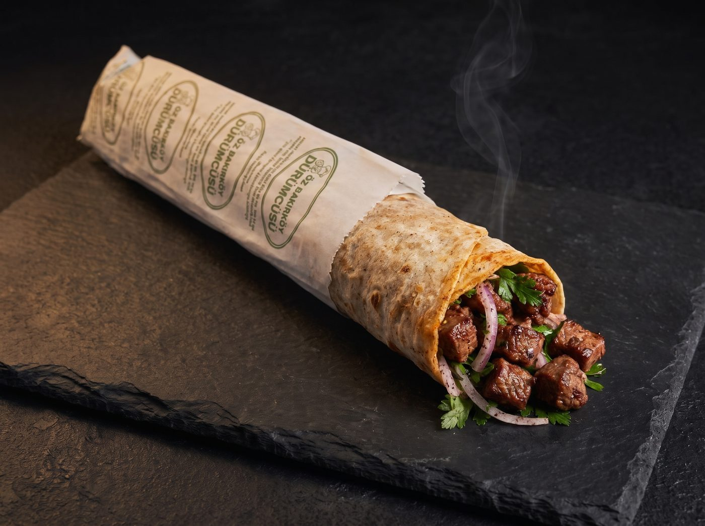

ÖZ BAKIRKÖY
DÜRÜMCÜSÜ
Hakkımızda
Menü
Hizmetler
Kampanyalar
Galeri
İletişim
0212 571 04 20
ÖZ BAKIRKÖY
DÜRÜMCÜSÜ
Ana sayfa
Hakkımızda
Menü
Hizmetler
Kampanyalar
Galeri
İletişim
0212 571 04 20
Ana sayfa
/
Menü
/
Dürümler
/
Çöp Şiş Dürüm
Çöp Şiş Dürüm
Dürümler

Terbiyeli çöp şişin küçük lokmaları, sıcak soslu lavaşın içinde de yerini bulur.
Porsiyon olarak da var
Çöp Şiş
Diğer dürümler
Adana Dürüm
Urfa Dürüm
Ciğer Şiş Dürüm
Yürek Şiş Dürüm
Tavuk Şiş Dürüm
Önceki
Urfa Dürüm
Sonraki
Ciğer Şiş Dürüm
0212 571 04 20
Yol tarifi al